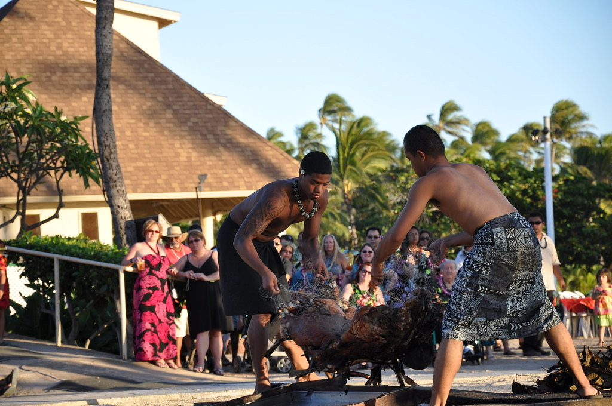
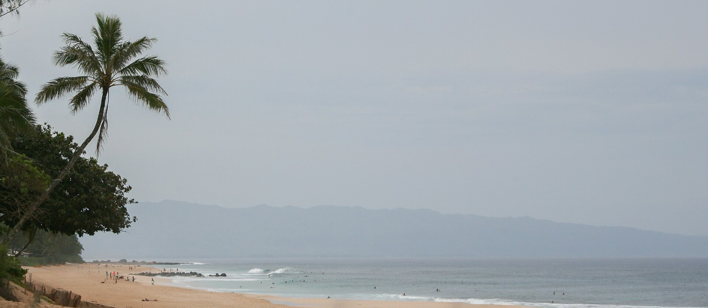
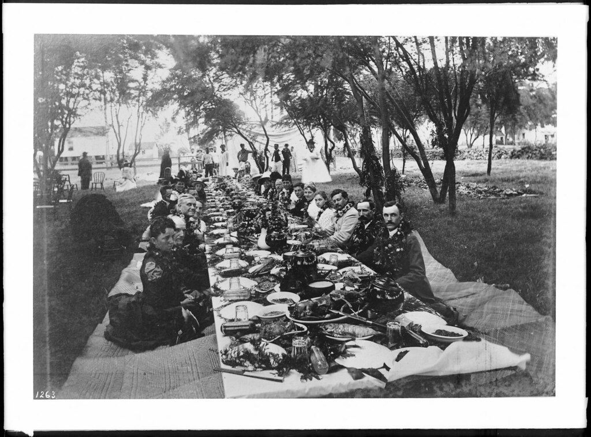
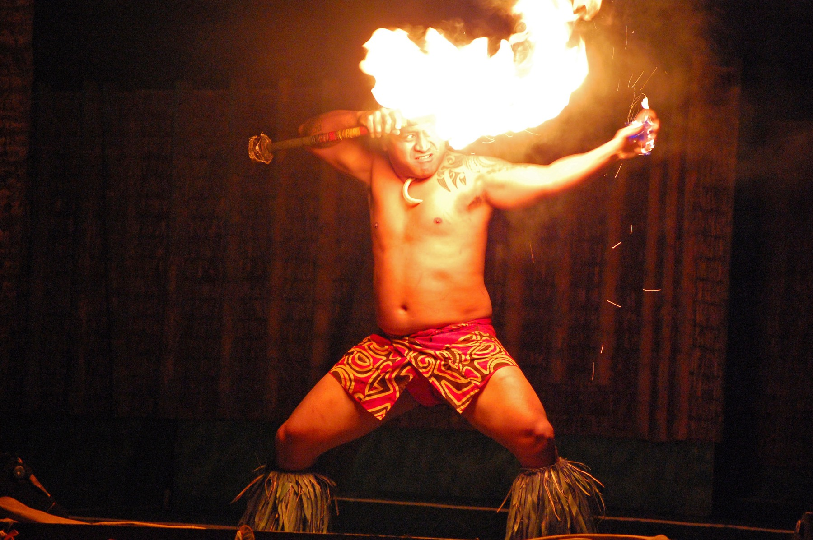

About
Ke Iki Sunset Lūʻau
Why we started
Why we started Ke Iki Sunset Lūʻau.
We saw room on this island for an evening that put the culture first — one that could give guests a real sense of Hawaiian history and of the beach it is held on.
We started in June 2026, and have built the evening since as a way to share the food, the traditions and the customs of these islands on the sand they come from. Guests tell us the educational and family-oriented side of it feels quite different from the large commercial lūʻau found elsewhere on Oʻahu.
Our aim was never simply to put on another dinner and a show under the stars. It was to build something immersive enough that you leave knowing where you have been, with the Spirit of Aloha at the centre of it rather than bolted on at the end.
It is a public evening and it is meant to be. You will be seated with people you do not know, which is how a lūʻau has always worked.


The beach
Why here and not somewhere easier.
Ke Iki sits between Waimea Bay and the Pupukea tide pools. It faces west with an open horizon, which is why we use it rather than somewhere with road access.
The sand shelves steeply and the shorebreak is heavy, particularly from October onward. We set up well back from the water and the evening is arranged around watching the ocean rather than entering it.

The word
‘Lūʻau’ means taro leaf.
Not ‘party’, and not ‘luau’ either — lūʻau, with the kahakō over the u and the ʻokina in the middle. It is named after the young taro leaves that go into the dish it is built around.
The older form of the feast kept men and women apart. That was broken in 1819, when Kamehameha II sat down and ate with the women of his court. The shared table is not a modern addition.
How it is cooked
The imu.
5:00 am — the fire
A pit is dug above the tideline, filled with wood and lit. It burns for about three hours, until the stones on top are white-hot.
8:00 am — wrapping
Banana stump and ti leaf go over the stones, then the pig, then more leaf, wet burlap and sand until no steam escapes.
4:15 pm — opening
The sand comes off in front of the tables. It is opened once, and dinner follows about half an hour later.
